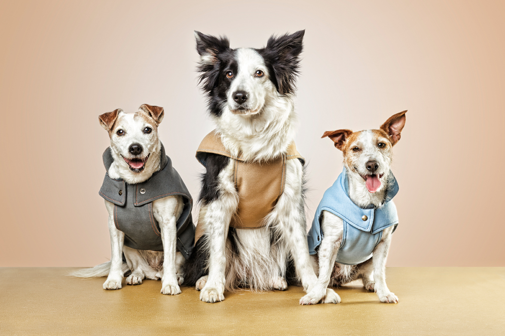

Luna es una perrita alegre y juguetona. Tiene un pelaje suave y una personalidad cariñosa que hará que te enamores de ella a primera vista. Adoptar a Luna te brindará años de amor incondicional y diversión.

Luis es un perro fuerte y amigable. Tiene una belleza impresionante y una personalidad leal que lo convierten en el compañero perfecto. Adoptar a Luis significa ganar un amigo leal para toda la vida y disfrutar de aventuras juntos.

Kira es una perrita dulce y juguetona. Con su pelaje suave y su personalidad amigable, Kira será una adición encantadora a cualquier hogar. Adoptar a Kria significa ganar una compañera leal y amorosa para toda la vida.

Paco es un perro juguetón y cariñoso. Tiene un pelaje suave y una personalidad amigable que lo convierten en el compañero ideal para cualquier hogar. Adoptar a Paco significa obtener un amigo fiel y un compañero de vida lleno de alegría.
La jornada de adopción de perros de marzo es una oportunidad única para encontrar a tu nuevo mejor amigo. En este evento, podrás conocer a una gran variedad de perros de diferentes personalidades, todos buscando un hogar amoroso. Los voluntarios estarán allí para ayudarte a encontrar el perro perfecto para ti y para responder a cualquier pregunta que puedas tener. Además, se llevarán a cabo actividades divertidas y se brindará información sobre la responsabilidad de tener un perro.